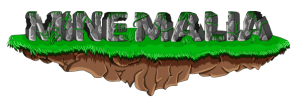

Blocksmc is a very good server that is very similar to hypixel but disclaimer it has bad words in it

Minamalia is a amazing server extremely friendly for everyone and similar to hypixel it doesent have bridge practice though
Herobrine.org is an amazing network but has a lot of things that they should add

This server is a bridging practice server but it is hard work to get it installed in tlauncher

I will recommend crackpixel to people who play cracked but it is terebble it has hackers and bad words I strongly won't reccomend this server for not cracked player